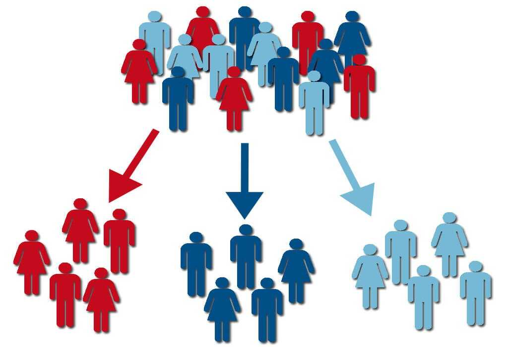
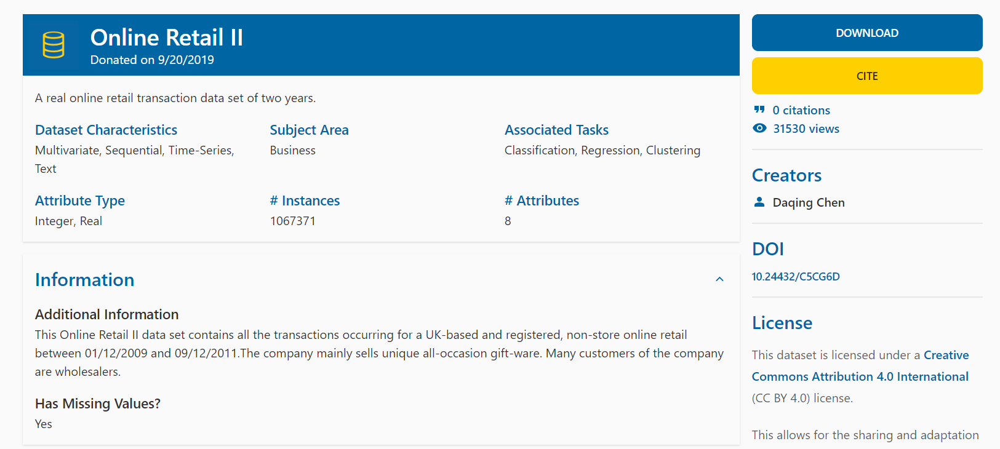
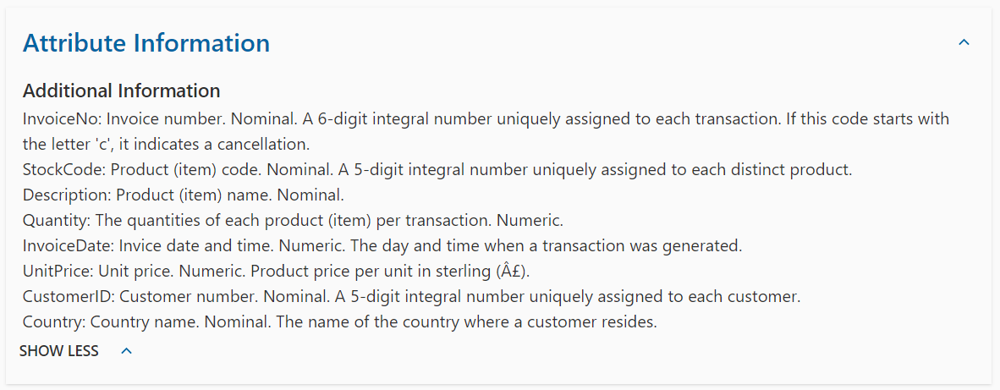
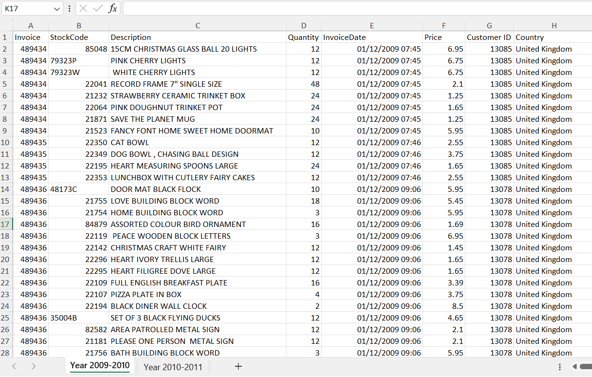
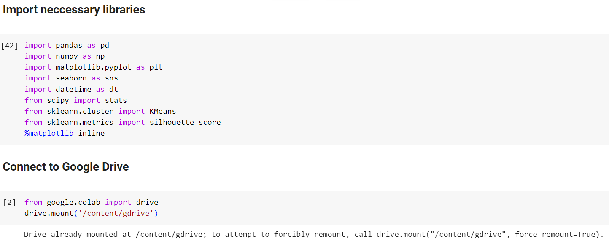
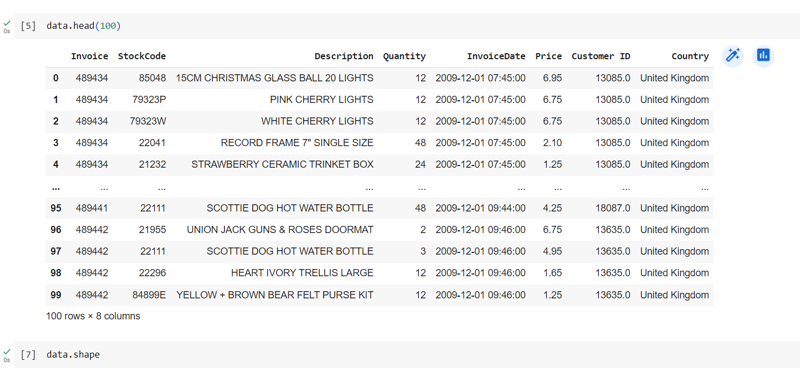
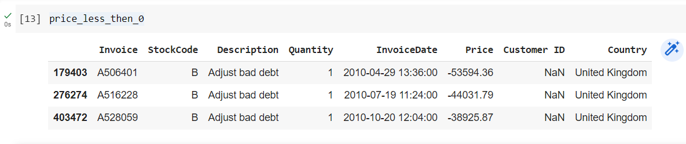
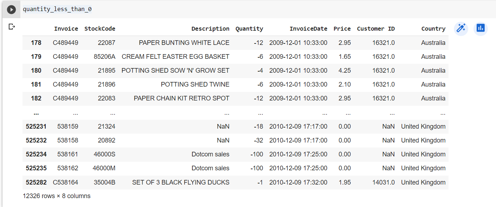
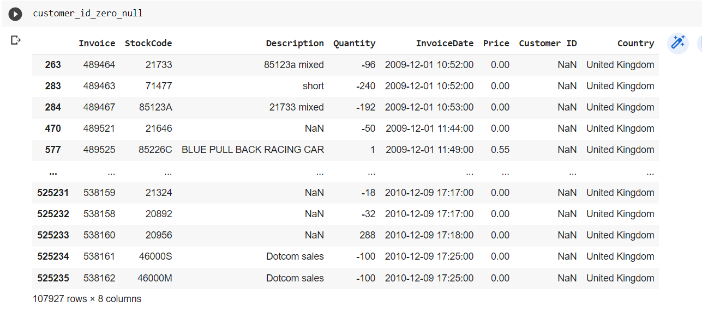

RFM stands for Recency, Frequency, and Monetary Value, and it is a technique used in marketing and customer segmentation to analyze and categorize customers based on their transaction behavior. Each of the three components has a specific meaning:
- Recency (R): How recently did the customer make a purchase?
- Frequency (F): How often does the customer make purchases within a specific timeframe?
- Monetary (M): How much money has the customer spent within a specific timeframe?
K-Means is a clustering algorithm used for partitioning a dataset into a specified number of clusters based on the similarity of data points. When using K-Means with RFM analysis, you are essentially using the three RFM components as features to group similar customers into clusters. The algorithm aims to minimize the variance within each cluster and maximize the variance between clusters.
RFM Customer Segmentation helps businesses better understand their customers, target specific segments with tailored marketing efforts, enhance customer loyalty, and increase profitability through optimized marketing strategies.
Website Online Retail II
Download dataset in website: Here
The Dataset Description
Or download dataset in my repository: Here
In this project, I only use sheet "Year 2009-2010" for RFM Analysis
Import neccessary libraries and read file:
Data overview:
data.info()
data.isnull().sum()
Check duplicated Value
(by this Script)
Price less than 0
Quantity less than 0
Customer Null and 0
My Exploration
- Total Records: 525461 records.
- Total Columns: 8 columns.
- All columns with correct data type.
- There are 2 columns with null values: Description with 2928 and CustomerID with 107927 null values.
- There are 12326 records with Quantity less than 0.
- There are 3 records with Price less than 0.
- There are 107927 records with CustomerId equal 0 and Null values.
- There are 6980 records duplicated.
The Scripts of Cleaning
- Delete records with Quantity less than 0, UnitPrice less than 0, Customer ID equal to 0, and Customer ID with Null values.
- Delete duplicated records.
- Each StockCode will correspond to each individual Description. The null Description field may be due to a lack of input by the employee, so the Description can be filled in by checking the StockCode against the previous product.
Here is my code for cleaning in Python:
Data After Clean (with 400901 Records)
(Save it to new files)
Download the Data After Cleaning: Here
RFM Value Table
(for 4312 CustomerID)
RFM Value Table
rfm_data.info()
Display the distribution to check
We have some problems:
- Recency distribution is right-skewed.
- Frequency distribution is right-skewed and leptokurtic.
- Monetary distribution is right-skewed and leptokurtic.
All three fields do not follow a normal distribution of data.
It is neccessary to transformation data before using K-mean.
Some method for transformation data:
- log transformation.
- square root transformation.
- box-cox transformation.
- cube root transformation.
analyze_skewness function:
analyze_skewness ('Recency')
analyze_skewness ('Frequency')
analyze_skewness ('Monetary')
All data fields are well-suited for Box-Cox transformation as the Box-Cox values are closest to zero.
Feature Transformation
Scaler Data
Using Elbow to identify the number of cluster
Using Silhouette Score to identify the number of cluster

As the graph visualized above is:
- In both two method, we won't choose k =2 because it doesn't has the good cluster.
- In the Elbow method, we will choose k = 4 because this score represents a relatively large reduction in SSE compared to the previous k.
- In the Silhouette method, we will choose k = 4 because with k = 4 having highest Silhouette Score and the number of good clusters.
So I choose k = 4 for clustering
Clustering
This is data After clustering. We can see that the data is clustered.
Cluster 0 - "Loyal High-Spending Customers":
Metric:
- Recency: 16.05 (Recent)
- Frequency: 10.85 (Frequent)
- Monetary: 5682.21 (High spending)
This segment comprises customers who have made recent, frequent purchases and have a high spending level. They might be loyal and significant customers for your business.
Marketing strategies for this group could include:
- Special offers: Provide exclusive discounts, special offers, or gifts for their next purchase to honor their loyalty.
- Membership program: Encourage them to join a loyalty program to receive more benefits from their shopping.
Cluster 1 - "Infrequent Low-Spending Customers":
Metric:
- Recency: 36.51 (Quite a while)
- Frequency: 1.41 (Infrequent)
- Monetary: 383.47 (Low spending)
This segment consists of customers who make infrequent purchases with low spending. They could be potential customers that need to be motivated to increase their purchases and spending.
Marketing strategies for this group could include:
- Re-engagement campaigns: Send emails or push notifications with appealing offers to encourage them to return for shopping.
- Bundle promotions: Offer additional products or services with their orders to enhance the value of their purchases.
Cluster 2 - "Occasional Medium-Spending Customers":
Metric:
- Recency: 91.34 (Quite a while)
- Frequency: 3.55 (Infrequent)
- Monetary: 1381.49 (Moderate spending)
This segment includes customers who shop occasionally with moderate spending. They have the potential to increase their purchases if motivated appropriately.
Marketing strategies for this group could include:
- Stimulus campaigns: Use email marketing or advertisements to introduce new and attractive products.
- Loyalty points program: Encourage them to shop more frequently by offering loyalty points that can be redeemed for rewards.
Cluster 3 - "Rare Low-Spending Inactive Customers":
Metric:
- Recency: 228.80 (Quite a while)
- Frequency: 1.17 (Infrequent)
- Monetary: 280.44 (Moderate spending)
This segment contains customers who rarely shop, haven't been active recently, and have low spending. They might be challenging to re-engage.
Marketing strategies for this group could include:
- Recovery campaigns: Use email marketing or advertisements to introduce new and attractive products.
- Feedback surveys: Gather their opinions about products or services to improve their shopping experience and attract them back.
View my full project: Here